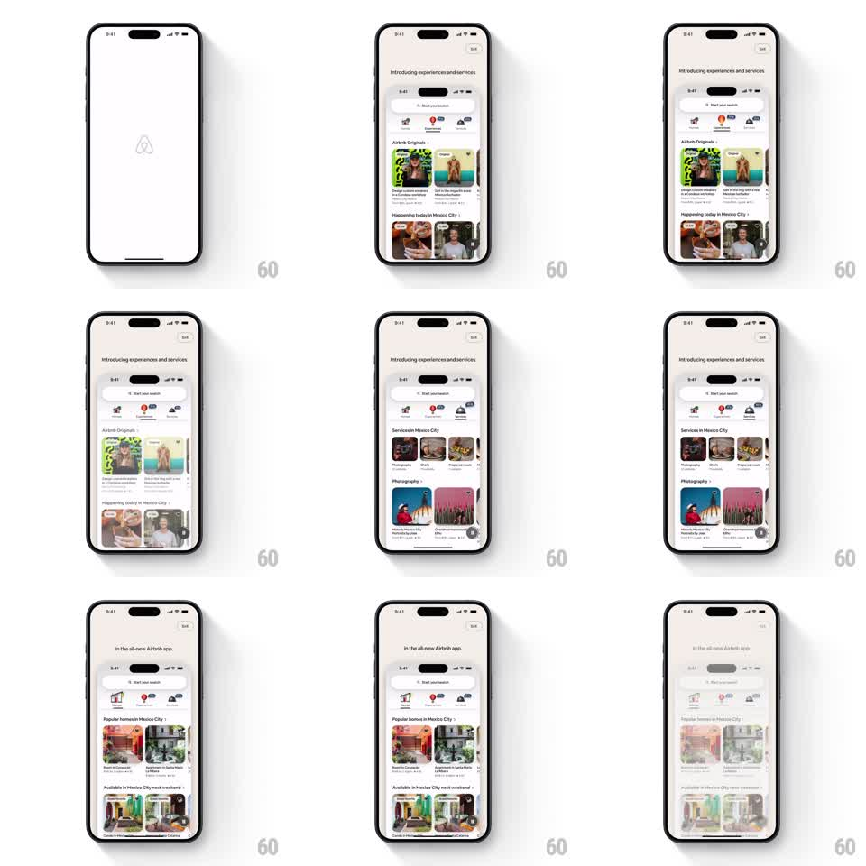

Media
Frame-by-frame

Rebuild this animation 1:1: Airbnb's app intro sequence - the Airbnb logo fades in on a white screen, then a simulated device slides in showing "Introducing experiences and services" and auto-scrolls through feature rails (Airbnb Originals, Services in Mexico City, Popular homes) before the view zooms into the live app interface.

Rebuild this animation 1:1: Airbnb's app intro sequence - the Airbnb logo fades in on a white screen, then a simulated device slides in showing "Introducing experiences and services" and auto-scrolls through feature rails (Airbnb Originals, Services in Mexico City, Popular homes) before the view zooms into the live app interface. ## Integration Integration: stack-agnostic spec - springs given as stiffness/damping, timed motions as duration + curve; map every value to your framework and animation library of choice. ## Scene White intro screen with the Airbnb logo. Then a phone-framed preview under the heading "Introducing experiences and services" with a Skip button top-right. Inside the frame: the Airbnb home feed - tab strip (Homes / Experiences / Services), "Airbnb Originals" cards, "Services in Mexico City" rail, "Photography" rail, then "In the all-new Airbnb app." heading with "Popular homes in Mexico City" and weekend availability rails. ## Motion spec Pattern: sequenced feature showcase inside a device frame with zoom-out finish. - The logo fades in center (300ms), holds 600ms, then scales down and fades as the device frame slides up from below (spring ~260/20). - The heading "Introducing experiences and services" fades in above the frame (250ms). - The framed feed auto-scrolls: each rail slides in horizontally (350ms ease-out, 300ms apart) - Originals, Services, Photography - with cards fading up staggered (60ms). - The heading crossfades to "In the all-new Airbnb app." (250ms) as the feed scrolls to homes rails (400ms ease-in-out). - Finale: the device frame expands and its screen content scales up to become the real interface (zoom 1.0 -> 1.15, 450ms ease-in-out), the frame chrome fades, and the live tab strip and rails snap to interactive positions. ## Calibration - Auto-scroll pacing is deliberate: each rail gets about a beat on screen before the next. - The zoom-out finish must land exactly on the live layout - no jump after the chrome fades. ## Reduced motion Logo fades in, then the sequence skips straight to the live interface with a 300ms fade. ## Don't miss - The Skip button is visible the whole time the device frame is on screen. - The device frame has its own status bar content matching the simulated feed.